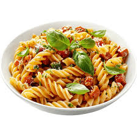

Pasta Recipe

Description
Tender corkscrew pasta is cloaked in a creamy mushroom sauce sporting flavors of three
cheeses.
Ingredients
- Campbell's® Condensed Cream of Mushroom Soup
- shredded two-cheese blend
- grated Parmesan cheese
- milk
- ground black pepper
- cooked corkscrew-shaped pasta
Steps
- Gather the ingredients.
- Mix soup, cheeses, milk and black pepper in 1 1/2-qt. casserole. Stir in pasta
- Bake at 400 degrees F. for 20 min. or until hot.
- Serve hot and enjoy!
HOME